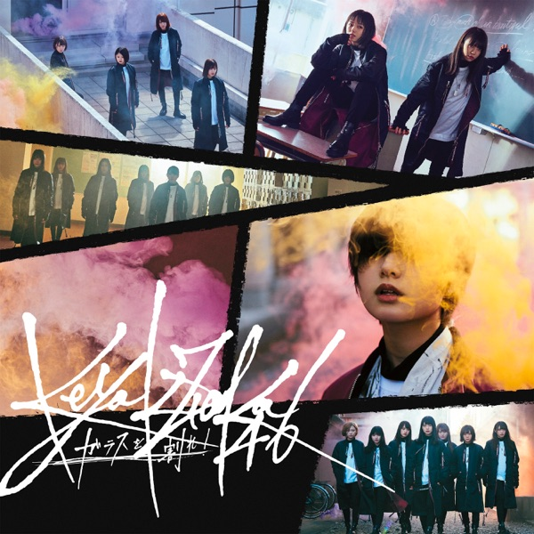

← 楽曲図鑑に戻る

初収録リリース「ガラスを割れ!」のジャケット
欅坂46
発売日：2018-03-07収録：ガラスを割れ!（6thSG）種別：ユニット曲作曲：ふるっぺ編曲：ふるっぺライブ披露：13件
尾関梨香、小池美波、長濱ねる
ガラスを割れ！、もう森へ帰ろうか？、ゼンマイ仕掛けの夢、バスルームトラベル、夜明けの孤独
← 前の曲「ゼンマイ仕掛けの夢」次の曲「夜明けの孤独」 →
 サカミチ
サカミチ